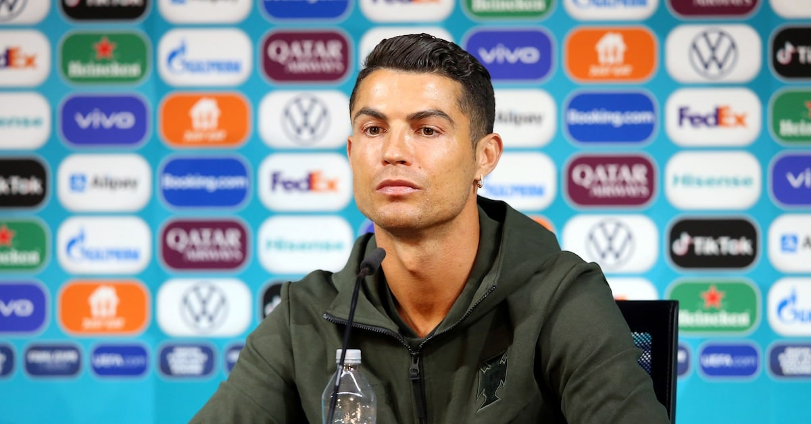

Removed Coca-Cola at the Euros — $40B Wiped Off Market Cap
The presser moment: On 14 June 2021, at a Euro pre-match press conference, Ronaldo sat down, frowned at the two Coca-Cola bottles before him, slid them out of the camera frame, raised a bottle of water and addressed the camera in Portuguese: 'Água (water).' The intent was to urge the public to drink water and shun sugary drinks. A few seconds that kicked off a market-cap storm.
Market-cap wipe-out: According to multiple financial outlets, in the hours afterwards Coca-Cola's share price fell from $56.10 to $55.22, a drop of about 1.6%, wiping roughly $4 billion off its market cap. As a top-tier UEFA sponsor (sponsorship fee in the tens of millions of euros), Coca-Cola's bolt-from-the-blue 'disaster' stunned the marketing world, a textbook case of celebrity-effect blowback in business schools.
UEFA's response: UEFA swiftly released a statement stressing that Coca-Cola was an important partner and politely reminded players across teams 'not to disrupt sponsor displays at press conferences'. UEFA insiders reportedly fumed at Ronaldo's 'sabotage' but, given his stature, did not punish him publicly — they could only swallow the loss, exposing the delicate balance between commercial interests and superstar clout.
Players copycat: Ronaldo's move set off a chain reaction. France's Paul Pogba, a Muslim who doesn't drink, removed the Heineken beer in front of him at a later presser; Italy's Locatelli likewise shifted the Coke bottles. For a moment 'bottle-shifting' became an unlikely Euros trend, sponsors were on edge and UEFA had to repeatedly reassert sponsor rights.
Commercial irony: Most ironically, Ronaldo himself is a spokesperson for several sugary or high-calorie brands, and his personal business empire depends on the very sponsorship system. Critics pointed out that his 'moral judgement' on Coca-Cola was somewhat double-standard — when the interest is on his side, the 'health advocacy' no longer flies so flag-like.
Truth of attribution: Financial analysts noted that the $4 billion swing was not all down to Ronaldo — the broader market was down that day and Coca-Cola's fundamentals were under pressure, so the share-price move was a multi-factor outcome. But the media clearly preferred the dramatic narrative of 'a superstar's finger evaporating $4 billion', and truth and rumour got repeatedly reshaped in transit until all was blurred.
The cost: A single phrase, «drink water», and $40 billion wiped off a sponsor's market cap. The arrogance with which he sank a football partner, rendered as a figure.